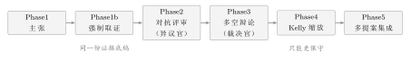

第六章让 AI 自己吵一架：多空辩论
6.1两个 AI，你信哪个
先讲一个小实验，是我自己做的。 我把同一份市场证据，给了决策官两次。 第一次，我只问它：“今天该怎么做？”它回得很干脆：方向看多，建议仓位 0.8，理由三条，条条通顺。 第二次，我把一模一样的证据给它，只在末尾加了一句：“请找出你这个判断可能错在哪里。” 它立刻换了口气。它列出了三条风险，其中一条是流动性——而这恰好是我自己看着那份证据时最担心的那一处。 同一份证据，同一个模型，两个结论。 我盯着这两次输出想了很久。问题不是它前后不一致。问题是：如果我只问了第一次，我拿到的就是一个看起来很确定的答案，而它自己明明知道存在第二条路。 后来我明白了一件事。一个只给我结论的 AI，和一个能自己找出反证的 AI，我信后者。不是因为后者更聪明，而是因为前者把不确定性藏起来了，后者把它摆在了桌面上。
想象一场法庭审理。
检察官陈述完毕，他说得很完整——人证、物证、时间线，全都对得上。如果你只听他这一遍，你几乎会立刻点头。
可法庭不会就此结束。接下来是辩护律师的交叉询问。他不重复检察官的话，他专门问那些检察官没提的地方：那天晚上你的当事人到底在哪？这根绳子为什么只验了一次？
这不代表检察官一定错。代表的是：在“有罪”这个结论被采纳之前，必须有人站在对面，认真地找过它的漏洞。
交叉询问的价值，不在于它总能推翻什么。它的价值在于：它让一个结论必须在被反驳之后还站得住，才算数。
一份没人反驳过的判断，和一份被认真反驳过、还活下来的判断，分量完全不同。哪怕它们最后写着同一个词。
6.2让同一个模型“再想一遍”，为什么没有用
我第一个想到的办法很自然：让它自查。 让它在给出结论之后，再看一遍自己写的东西，问一句“你确定吗”。便宜、简单，一次调用就搞定。 我试了。结果是：它百分之九十的情况下会告诉我“经过重新审视，我依然认为……”。 不是它嘴硬。是这件事从原理上就办不到。 在第 第一章 章我讲过那个“一个人的公司”的问题，这里的道理是同一个，但更尖锐：让同一个模型在同一次对话里自我怀疑，等于让它在同一段计算里，同时优化“给出结论”和“推翻结论”两个目标。这两个目标是打架的，而语言模型的本能是输出连贯的文本。“我刚才错了”这句话，是一段连贯文本里最不连贯的东西。 所以它会替你圆场。它会用更细致的措辞，把同一个结论再说一遍，让你觉得它考虑过了。两种“再想一遍”的区别
自查：同一个角色、同一段上下文、同一个目标函数，只是多了一轮。结果是“结论的修辞升级版”。
对抗：换一个角色、换一套系统提示词、给它一个不同的考核指标——它的任务不是“得出更好的结论”，而是“找出这个结论的漏洞”。
前者不产生新信息，后者才产生。区别不在问几遍，在换没换视角。
6.3一个差不多对的模型：吵一架
粗糙的模型是这样的：让主张官先说一个方向，再让一个专门挑刺的角色上场，把主张官的说法按在地上摩擦一遍。 这个模型抓住了核心：反对意见必须由另一个独立的东西产生。但它太粗，漏掉了三件事。 漏掉的第一件事：吵之前得先把证据摆出来。如果双方吵的是空口白话，那这场辩论就只是两种措辞在互相覆盖。真正的辩论要有共同的证据底稿——今天的市场什么样、组合里有什么、风控怎么说、候选股票是哪几只。这些东西必须先被采集成一份清单，双方都在这份清单上发言。 漏掉的第二件事：挑刺的角色只能往保守的方向走。这一点至关重要，我们在第 第七章 章会用一整个定理来讲它。这里先给出结论：在这个系统里，任何角色的意见只会让仓位变小，不会让它变大。挑刺的人就算想说“你应该更激进”，也递不出去。 漏掉的第三件事：争论到最后，必须留下一个能算的数。光有“看多派说了什么、看空派说了什么”是没用的。要有一个数字，告诉决策层“这场争论到底吵得有多凶”。这个数字叫共识度。 补上这三件事，我们得到一个五段的流程。
6.4它在系统里长什么样
入口函数叫decideProposalGate，在 internal/cio/proposal.go。它做的第一件事不是问主张，而是取证。
internal/cio/proposal.go）func (c *CIOEngine) decideProposalGate(ctx context.Context, in proposalInput, ruleRate float64) *proposalGateResult {
evidence := buildEvidenceLines(in) // Phase1b 强制取证：先摆证据
res := &proposalGateResult{Evidence: evidence, Effective: ruleRate, KellyScale: 1.0}
prop := c.genDecisionProposal(ctx, in) // Phase1 主张
if prop == nil {
return res // 不可用 → 完全回退规则
}
// 规则风控门：主张只能更保守
gate := math.Min(ruleRate, clampF(prop.TargetPositionRate, 0.2, 1.0))
...
}buildEvidenceLines 把日期、六维判势、组合快照、回撤、风控摘要、因子候选、历史反馈整理成一份清单。这份清单先于任何判断被准备好，并且会随着决策一起落库。也就是说，无论后面怎么吵，“当时看到的是什么”是被固定下来的。
然后是主张官。它的系统提示词里写死了输出的形状——一个 JSON 对象，五个字段：
internal/cio/proposal.go）{"market_direction":"BULLISH|BEARISH|NEUTRAL",
"market_read":"<一句话解读>",
"target_position_rate":0~1,
"preferred_stocks":[{"code":"600519","reason":"<理由>"}],
"confidence":0~100,
"conclusion":"<不超过120字总结>"}market_direction）、建议用多少仓位（target_position_rate）、看好哪几只（preferred_stocks）、以及它对自己有多确信（confidence）。
那个 confidence 字段是本章的伏笔。请记住它——下一章那个把分歧折算成数字的公式，一半的原料就是它。
辩论那一段是这样的：
internal/cio/proposal.go）// 辩论裁决官输出的结构
type debateVerdict struct {
Direction string `json:"direction"` // BULLISH|BEARISH|NEUTRAL
Bull []string `json:"bull"` // 看多论据
Bear []string `json:"bear"` // 看空论据
Agreement int `json:"agreement"` // 0~100 共识度
Summary string `json:"summary"`
}
// 解析失败就返回 nil —— 不影响门控
func (c *CIOEngine) parseDebateVerdict(content string) *debateVerdict {
block := extractJSONBlock(content)
if block == "" { return nil }
var deb debateVerdict
if err := json.Unmarshal([]byte(block), &deb); err != nil { return nil }
if deb.Direction == "" || len(deb.Bull) == 0 && len(deb.Bear) == 0 { return nil }
if deb.Agreement < 0 || deb.Agreement > 100 { deb.Agreement = 0 }
return &deb
}nil。
第三，nil 不是“没吵架”，是“这场辩论不算数”。它会被丢掉，门控流程照常往下走，只是少了一路意见。
这就是本章真正想讲的设计。系统宁可承认“这一路意见我没拿到”，也不肯硬塞一个结论进去。
这大概是最容易被想歪的一点。看到“多空辩论”四个字，本能反应是：这是在凑智慧，想让判断更准，从而赚得更多。
如果你带着这个预期去读代码，你会看不懂——因为这个系统里，辩论的每一步都是往下调的。
主张官说 0.8，异议官说 0.6，于是取 0.6；辩论说共识度不高，再乘一个小于 1 的系数；集成投票发现整体偏空，再把仓位压到 0.75 以下。整条链上，没有任何一步是“把仓位抬高一点”。
所以辩论的真实目标不是提高收益，而是更保守。它要解决的问题是“我凭什么相信一个单一来源的判断”，它给出的答案是“我不相信，所以我让别的视角来削弱它”。
把这件事说透：一个会降低收益期望、但会降低错误集中度的机制，在投资里往往是划算的。因为你最怕的不是“赚得少一点”，是“在一件自己很确信的事情上亏掉一大块”。辩论买的不是收益，是保险。
既然是“多空辩论”，有人自然会想：那万一模型抽风、输出解析不了，是不是就默认按“中性”处理，把流程走完算了？
在别的系统里，这可能是合理的兜底。在这套系统里，它是一条红线。
看上面
parseDebateVerdict的写法：任何一个环节不合法，返回的是 nil。而调用方 debateProposal 拿到 nil 之后，什么都不做——不生成默认方向，不填占位结论，不改变已有的仓位门控。
为什么这么“浪费”？因为一个编出来的“中性”，和一个真实的“中性”，在下游看起来一模一样，但在审计时天差地别。第 第十章 章会讲，这套系统的核心承诺之一，是决策发生的那一刻就把证据固化下来。如果此刻塞进去的是一个系统自己造的假结论，那整条证据链就废了。
同样的道理也写在主张官那边：LLM 没配置、调用失败、超时、输出解析不了，decideProposalGate 直接返回 Effective = ruleRate，也就是完全退回规则决策，AI 的意见一个字都不采纳。这不是“降级使用假数据”，这是“没有意见就不发表意见”。
一句话记住：在这套系统里，缺席是合法的，编造不是。
回到本章开头那个自查实验。我把“请再检查一遍”和“请找出你可能错在哪”当成一回事，实际上它们是两件不同的事。
真正的对抗评审，在系统里是另一个角色、另一套系统提示词、另一次独立的调用。异议审查官有它自己的职责说明，里面明确写着“故意挑刺”，还明确写了它的产出必须是一个更保守的建议仓位。
它和主张官不共享上下文，也不共享立场。它甚至不需要同意主张官对市场的判断——它只需要回答一个问题：这个主张如果错了，会错在哪？
自查办不到这一点。自查是同一支笔写完之后，换一种说法再写一遍。对抗评审是换一个人，拿着红笔，在纸上圈出错的地方。区别不在于问了几遍，在于有没有第二个人。
技术趋势维度看“指数有没有站上均线”，市场广度维度看“上涨家数占比”。100 与 18 是同一天、同一份行情算出来的两个数。
market_sixdim_daily 表，trade_date = 2026-09-02；只读查询于 2026-09-24。
- 情况 A：多头说“资金在流向同一条主线”，空头说“这条主线的估值已经不便宜了”。两句话其实在说同一件事的两面。共识度可以很高，比如 80。
- 情况 B：多头说“放量突破”，空头说“放量出货”。这是两种互相排斥的读法——同一根阳线，一个人看成进攻，一个人看成撤退。共识度只能很低，比如 25。
- 五阶段门控入口与规则风控门：
internal/cio/proposal.go，函数decideProposalGate。 - 强制取证（证据链文本）：同文件，
buildEvidenceLines/buildProposalPrompt。 - 主张官与它的系统提示词：同文件，
proposalSystemPrompt/genDecisionProposal/parseDecisionProposal。 - 异议审查官（Phase2 对抗评审）：同文件，
skepticSystemPrompt/challengeProposal/parseSkepticVerdict。 - 辩论裁决官（Phase3 多空辩论）：同文件，
debateSystemPrompt/debateProposal/parseDebateVerdict。 - 各阶段均为独立的一次 LLM 调用，超时 60 秒；失败/解析失败返回
nil，不改动门控。 - 真实分歧样本：
market_sixdim_daily表。 - 前端展示：CIO 页的【多空辩论】区块。
动手试一试（十五分钟）
- 打开系统，进入首席投资官（CIO）页，找到【多空辩论】那块卡片。
- 看它有没有方向、共识度、以及多空两组论据。如果今天还没有决策，就先看决策日志里最近一条。
- 把多空两组论据各读一遍。问自己一个问题：这两组论据，是在争论“发生了什么”，还是只在争论“这意味着什么”？
- 如果它们只在争论“这意味着什么”，那今天的方向其实是稳的；如果在争论“发生了什么”，那今天这块冰是薄的，仓位理应更小。
- 最后一问：如果这张卡片是空的，你敢不敢让它照常下单？这个问题的答案，就是本章全部的分量。